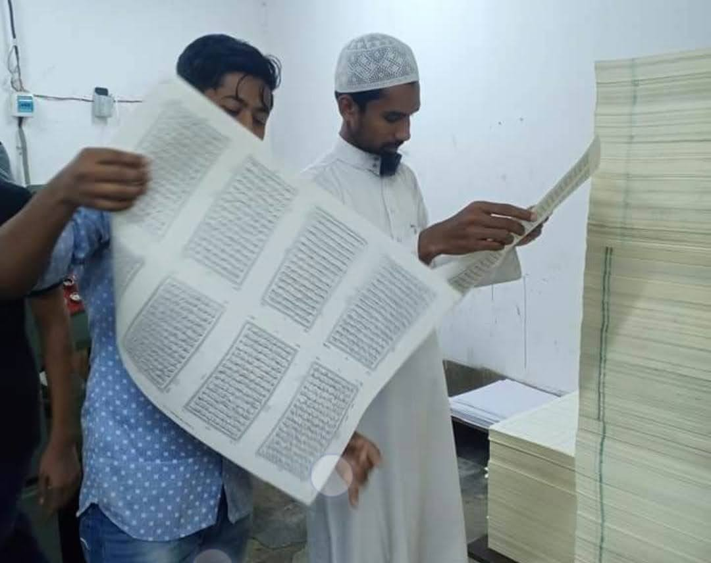
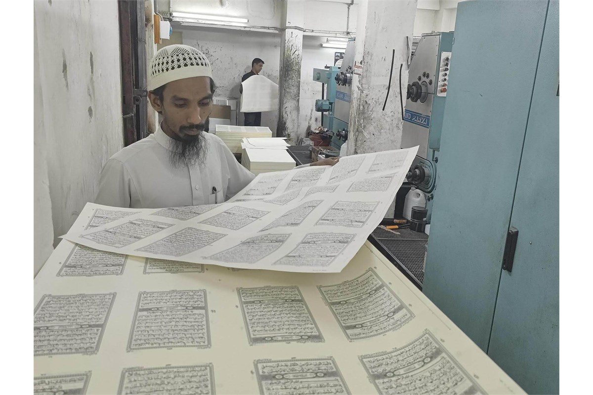
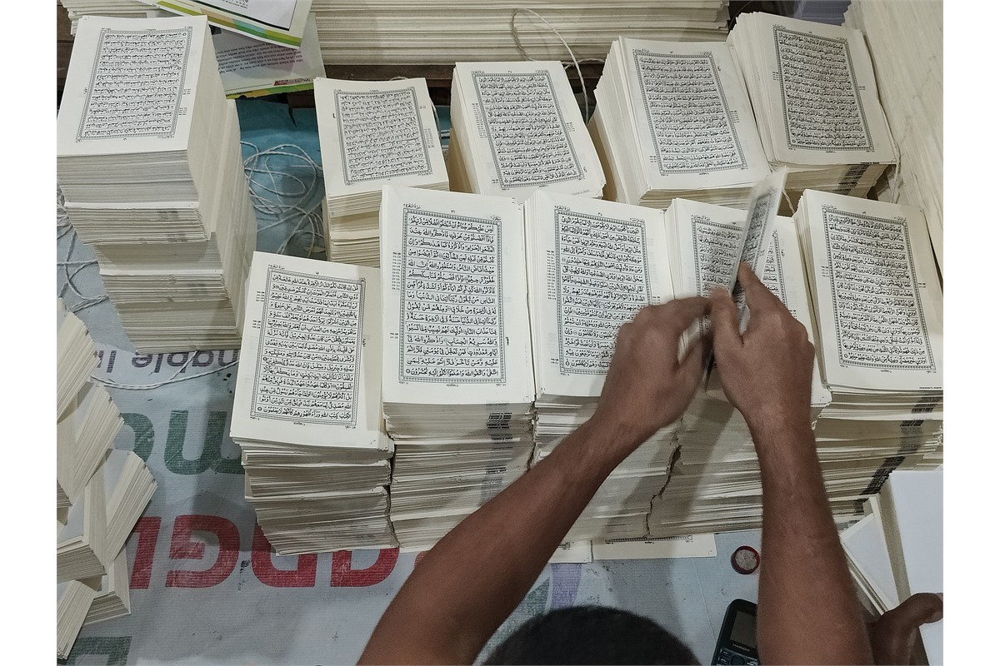
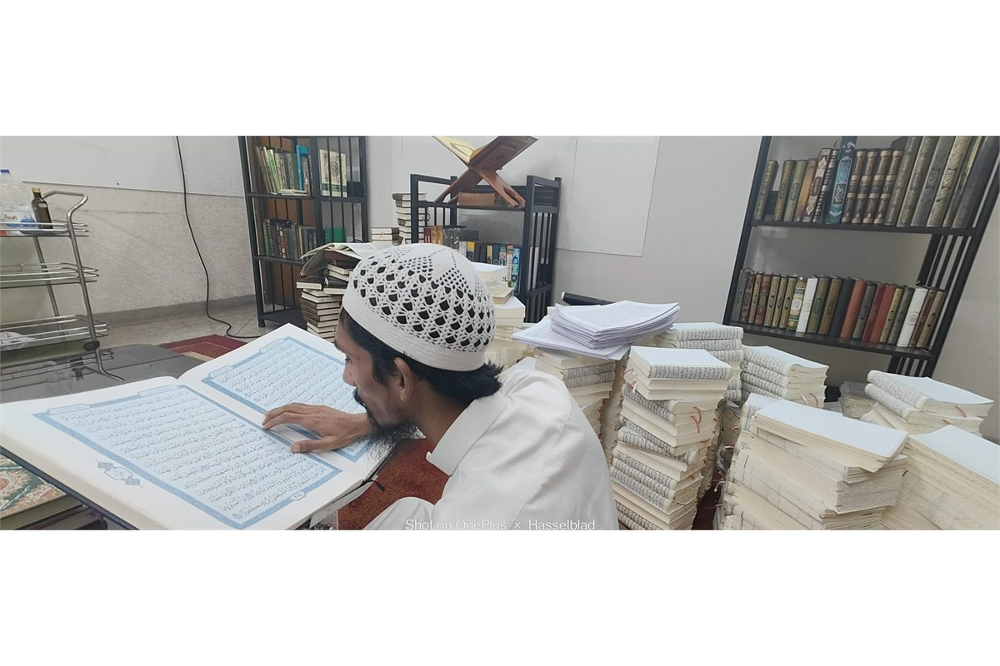
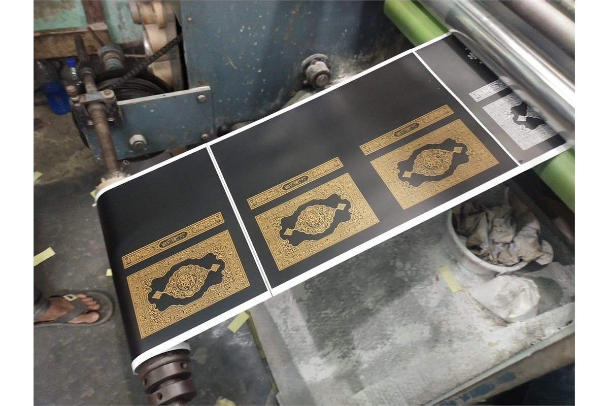
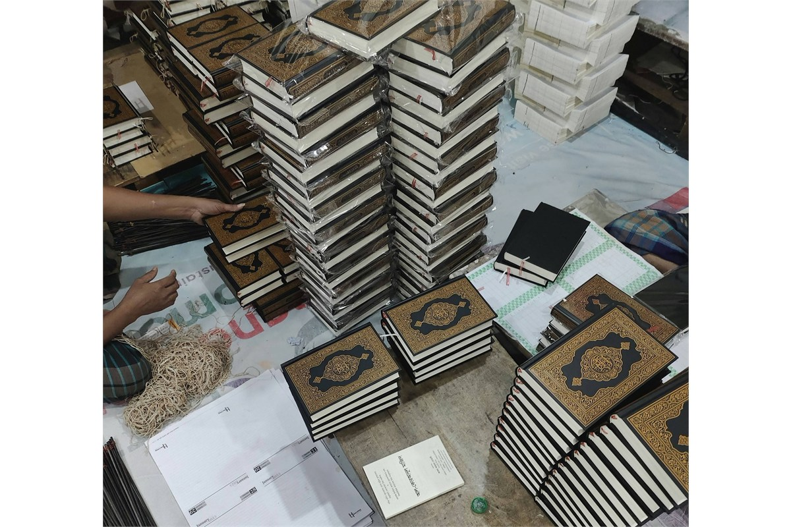
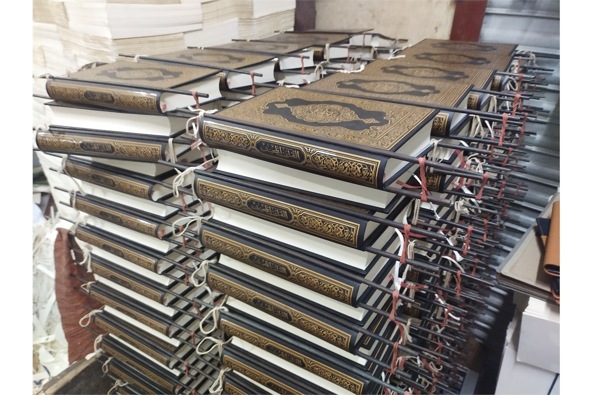
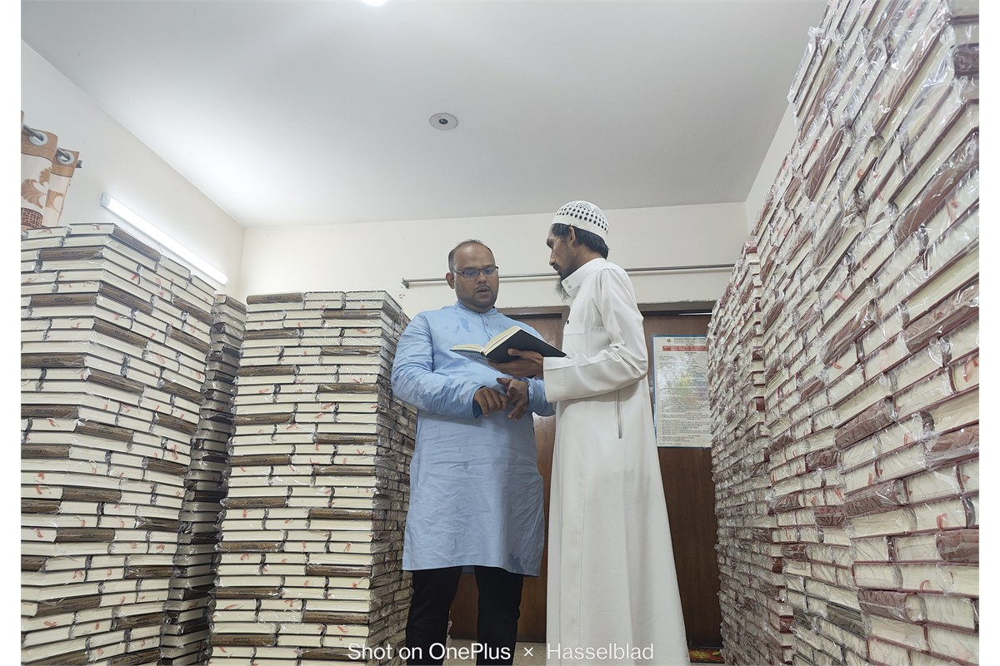

প্রি-প্রেস ও ডিজাইন
প্রতিটি পৃষ্ঠার বিন্যাস, পাঠের ধারাবাহিকতা ও মুদ্রণযোগ্যতা যাচাই করে প্রস্তুত করা হয়।
- আরবি টাইপোগ্রাফি ও পৃষ্ঠা বিন্যাস
- মাল্টি-স্টেজ প্রুফরিডিং
- হিফজ শিক্ষার্থীদের উপযোগী পৃষ্ঠা বিন্যাস

সংরক্ষণ · প্রকাশনা · বিতরণ
নির্ভুল টাইপসেটিং থেকে চূড়ান্ত সরবরাহ পর্যন্ত প্রতিটি ধাপে মান, পাঠযোগ্যতা, স্থায়িত্ব ও মর্যাদাকে গুরুত্ব দেওয়া হয়।
মুদ্রণের আগে পৃষ্ঠা বিন্যাস, আরবি টাইপোগ্রাফি, পৃষ্ঠা নম্বর এবং হিফজ শিক্ষার্থীদের উপযোগী layout যাচাই করা হয়।
প্রতিটি পৃষ্ঠার বিন্যাস, পাঠের ধারাবাহিকতা ও মুদ্রণযোগ্যতা যাচাই করে প্রস্তুত করা হয়।

পরিষ্কার অক্ষর, সমান ink density এবং দীর্ঘস্থায়ী কাগজের মাধ্যমে পাঠযোগ্য ও টেকসই কপি তৈরি করা হয়।

মুদ্রিত sheet নির্দিষ্ট ক্রমে ভাঁজ করে একত্র করা হয়, যাতে পৃষ্ঠা বিন্যাস সঠিক থাকে।

প্রতিটি কপির মুদ্রণ স্বচ্ছতা, পৃষ্ঠা বিন্যাস, বাঁধাই ও চূড়ান্ত finish পরীক্ষা করা হয়।

ঐতিহ্যবাহী অলংকরণ ও আধুনিক স্থায়িত্বের সমন্বয়ে মলাট প্রস্তুত করা হয়।

ভাঁজ করা sheet সেলাই বা glue করে মুদ্রিত মলাটে স্থাপন করা হয়, যাতে কপি দীর্ঘদিন ব্যবহারযোগ্য থাকে।

আঠা ও binding সম্পূর্ণ স্থিতিশীল হওয়ার পর প্রতিটি কপি চূড়ান্তভাবে পরিদর্শন করা হয়।

পরিবহনের সময় সুরক্ষার জন্য প্রতিটি কপি যত্নসহকারে প্যাক করা হয় এবং যথাযথভাবে সংরক্ষণ করা হয়।

প্রতিটি ধাপে নির্ভুলতা, পাঠযোগ্যতা ও দীর্ঘস্থায়িত্ব নিশ্চিত করার চেষ্টা করা হয়।
পৃষ্ঠা ক্রম, পাঠের ধারাবাহিকতা ও layout যাচাই।
পরিষ্কার অক্ষর, সমান ink density এবং ব্যবহারবান্ধব নকশা।
দৈনন্দিন ব্যবহার ও দীর্ঘমেয়াদি সংরক্ষণের উপযোগী binding।
মুদ্রণ, বিতরণ, অনুদান অথবা সহযোগিতার বিষয়ে জানতে আমাদের সঙ্গে যোগাযোগ করুন।
যোগাযোগ করুন →